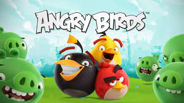

MOVIE REVIEW
| Synopsis | Casts and Directors | Movie Review | |
|---|---|---|---|
 |
Carl Fredricksen was a 78 year-old balloon salesman, is about to fulfill a lifelong dream. Tying thousands of balloons to his house, then he flies away to the South American wilderness. But curmudgeonly carl's worst nightmare comes true when he discovers a little boy named Russell is a stowaway aboard the balloon-powered house. A Pixar animation. |
Director: Pete Doctor
Casts: Edward Asner Christopher Plummer Jordan Nagai Bob Peterson Jerome Ranft John Ratzenberger Delroy Lindo |
4.8  Kyle Vansteelandt: "Up" was the one that my family adored; me, my sisters, and my mother. |
 |
Having escaped from the farm, Ginger and Rocky welcome a new little adventurer into their lives. Back on the mainland, the whole of chicken-kind faces a terrible threat. |
Director: Sam Fell
Casts: Thandiwe Newton Zachary Levi Bella Ramsey Imelda Staunton Lynn Ferguson Jane Horrocks Nick Mohammed |
3.4 sandeep rathee: "Chicken Run: Dawn of the Nugget" serves a delightful blend of nostalgia and fresh comedic brilliance in this long-awaited sequel to the 2000 classic. |
|  | Red, Chuck, Bomb and the rest of their friends are surprised when a green pig suggests that they put aside their differences and unite a common threat. Agressive birds from an island covered in ice are planning to use an elaborative weapon to destroy the swine and fowl way of living. Then they picked the best birds and pigs, and come up to infiltrate the island, afterwards the device is deactivated and return to their respective paradises intact. |
Director: Thurop Van Orman
Casts: Jason Sudeikis Peter Dinklage Josh Gad Bill Hader Nicki Minaj Leslie Jones | 4.3 Anuj Sharma: A silly yet hilarious movie! You will find yourself laughing out loud in many places! |